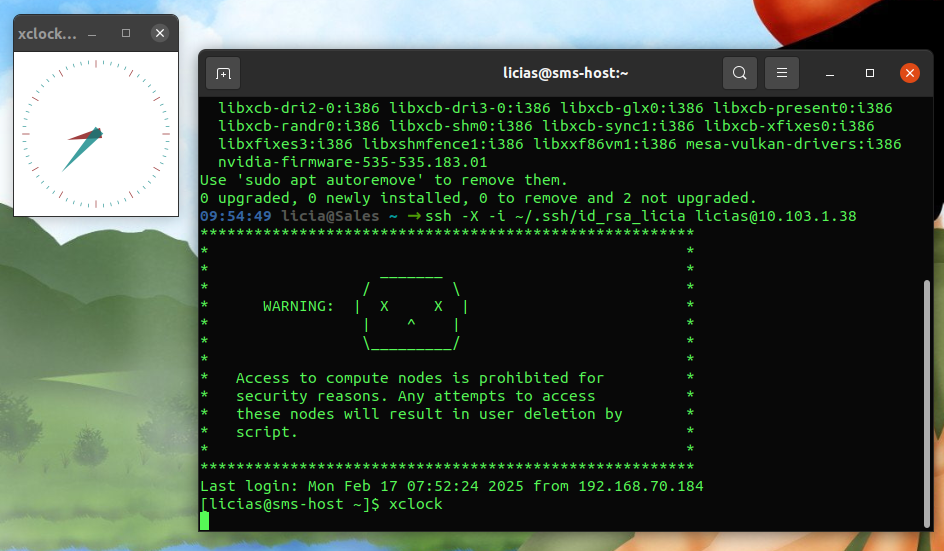
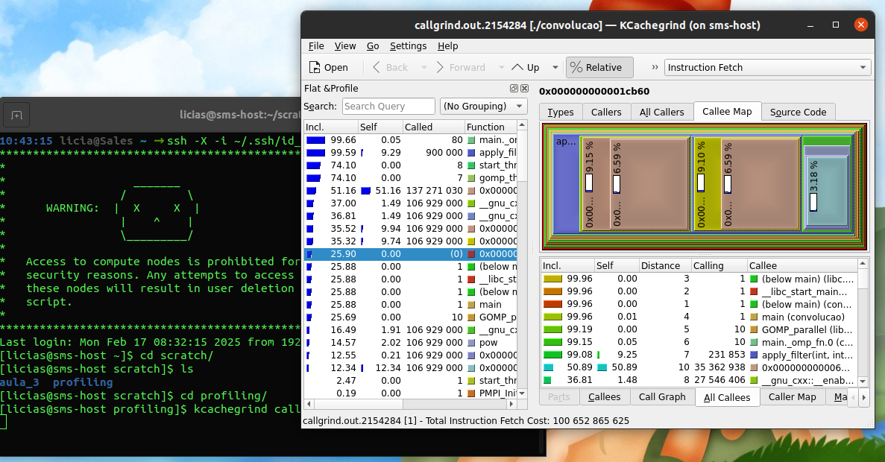

Otimização e Profiling¶
Em ambientes de HPC, dominar técnicas de otimização e profiling pode fazer toda a diferença na execução de programas complexos. Nosso objetivo é capacitar você a identificar gargalos de desempenho em seu código.
Objetivo: Entender como utilizar as flags de compilação e ferramentas de profiling para encontrar gargalos e melhorar o desempenho do código.
Recursos Necessários:
-
Código base do programa de convolução (
convolucao.cpp) usado na aula 02. -
Ferramentas de profiling:
gprof,Valgrind. -
Se você estiver usando Windows, será necessário usar o WSL, se você não tem o WSL configurado, siga esse tutorial antes de começar
Configuração e Teste do X11 nos Principais Sistemas Operacionais¶
Linux¶
Instale o X11 (se necessário):
sudo apt install x11-apps xauth # Debian/Ubuntu
sudo dnf install xorg-x11-xauth # Fedora/RHEL
Conecte-se ao cluster com X11 Forwarding:
ssh -X -i ~/.ssh/id_rsa seu_usuario@ip_do_cluster
xclock
xeyes
macOS¶
Instale o XQuartz (servidor X para macOS):
brew install --cask xquartz
xhost +
Conecte-se ao cluster com SSH e X11 Forwarding:
bash
ssh -X -i ~/.ssh/id_rsa seu_usuario@ip_do_cluster
Teste a exibição gráfica:
xclock
xeyes
Windows¶
Abra o WSL, instale o X11
sudo apt install x11-apps xauth # Debian/Ubuntu
Teste a exibição gráfica:
xclock
xeyes
Se você nunca acessou o Franky usando o WSL, será necessário configurar as chaves de acesso...
Instale os pacotes do ssh
sudo apt install openssh-server
ssh localhost
~/.ssh
Certifique-se de que as permissões estão corretas:
sudo chwon seu_usuario:seu_usuario id_rsa*
sudo chmod 400 id_rsa
Agora conecte-se ao Franky com o X11 Forwarding ativo usando a flag -X ou -Y no comando SSH:
ssh -X -i ~/.ssh/id_rsa seu_usuario@ip_do_cluster
Para conectar ao Cluster com X11 Forwarding e Testar a Configuração¶
Após configurar o X11 Forwarding, conecte-se ao cluster utilizando a flag -X ou -Y no comando SSH:
ssh -X -i ~/.ssh/id_rsa seu_usuario@ip_do_cluster
-X, tente com -Y, que permite conexões X11 menos restritivas:
ssh -Y -i ~/.ssh/id_rsa seu_usuario@ip_do_cluster
Verificando se o X11 está Funcionando¶
Após conectar ao cluster via SSH, execute o seguinte comando para verificar se o display foi corretamente encaminhado:
echo $DISPLAY
localhost:10.0, significa que o X11 Forwarding está ativo.- Se o retorno for vazio, pode ser necessário revisar a configuração.
Agora, teste a exibição de uma aplicação gráfica simples no cluster:
xclock
Se o X11 Forwarding estiver corretamente configurado, o teste com xclock abrirá uma janela gráfica no seu computador. Se houver falhas, verifique se o servidor X está rodando na sua máquina local.

Após concluir as configurações, vamos retornar ao guia. Começaremos explorando as flags de compilação que o GCC oferece para otimizar seu código. Desde ajustes básicos até transformações avançadas, você verá como as diferentes flags podem impactar o desempenho de seu programa.
Após otimizar o código na compilação, vamos entender como as ferramentas de profiling Gprof e Valgrind funcionam. Essas ferramentas são úteis para identificar quais partes do código são as mais exigentes em termos de recursos e onde os maiores ganhos de desempenho podem ser alcançados.
Flags de Compilação¶
-O1: Nível básico de otimização que aplica melhorias simples, mantendo o tempo de compilação rápido.-O2: Aplicação de otimizações mais agressivas, incluindo inlining de funções simples, unrolling de loops, e remoção de código morto.-O3: Nível mais alto de otimização, inclui todas as otimizações do-O2além de transformações adicionais que podem aumentar ainda mais o desempenho, como a vectorização de loops.-march=native: Gera código otimizado para a arquitetura específica da máquina onde o programa está sendo compilado, aproveitando ao máximo as instruções da CPU disponível.
Compilação com Diferentes Flags¶
- Compile o programa
convolucao.cppcom diferentes níveis de otimização:
Sem otimização:
mpic++ convolucao.cpp -o convolucao_basicao
Otimização básica (-O1):
mpic++ -O1 convolucao.cpp -o convolucao_O1
-O2):
mpic++ -O2 convolucao.cpp -o convolucao_O2
-O3):
mpic++ -O3 -march=native convolucao.cpp -o convolucao_O3
Medição de Desempenho¶
- Execute cada versão do programa no cluster usando um script SLURM similar ao usado na aula 02.
Modifique o número de iterações para 10, 30, e 60 para avaliar o impacto da complexidade no tempo de execução, submeta os jobs via SLURM, verifique os tempos de execução e compare o impacto de cada nível de otimização.
Análise dos Resultados¶
Gráficos: Elabore gráficos que relacionam o tempo de execução com o número de iterações para cada nível de otimização. Discussão: Analise como as diferentes flags de otimização impactaram o desempenho. Identifique quais otimizações trouxeram maiores ganhos e em quais situações.
Profiling com Gprof e Valgrind¶
Usando o Gprof¶
Compile o código com suporte ao Gprof:
mpic++ -pg -O2 convolucao.cpp -o convolucao_gprof
sbatch convolucao_gprof.slurm
gmon.out gerado:
gprof convolucao_gprof gmon.out > analysis_gprof.txt
Interprete o Flat Profile e o Call Graph gerados. Identifique as funções críticas e discuta possíveis otimizações com base nos resultados.
Usando o Callgrind (Valgrind)¶
Execute o programa com o Callgrind:
valgrind --tool=callgrind ./convolucao_O2
Para visualizar o relatório via terminal use o comando:
callgrind_annotate callgrind.out.<pid>
kcachegrind callgrind.out.*

Profiling¶
Elabore um Relatório que inclua:
-
Gráficos e análise dos tempos de execução para diferentes otimizações.
-
Discussão sobre os resultados obtidos.
-
Sugestões de otimizações adicionais baseadas nos resultados de profiling.
Submissão: Envie o relatório pelo Classroom até 28/02, 23h59.